Technology moves forward together.
A platform for the people shaping Nigeria’s digital future. Connect expertise with policy, business and ideas that move Abuja forward.
Professionals Institutions Innovators
About NCS Abuja Chapter
The Nigeria Computer Society (NCS) is the umbrella organization of all information technology professionals, interest groups and stakeholders in Nigeria. Formed in 1978 as the Computer Association of Nigeria (COAN), it became NCS in 2002 and is the national platform for advancing IT science and practice.
NCS Abuja brings together technology professionals, public institutions, businesses, academia and innovators to solve problems and create opportunities, all year round.
Advancement and promotion of computing and IT education and practice for the benefit of all.
Promote the education and training of computer and information scientists, engineers, architects and IT professionals.
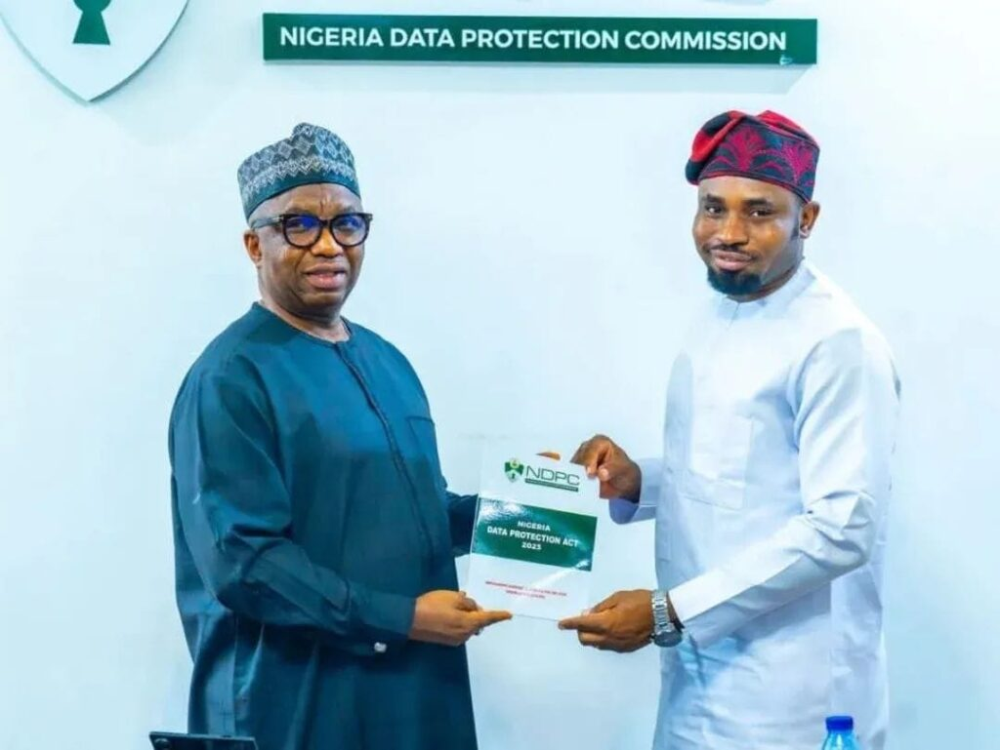
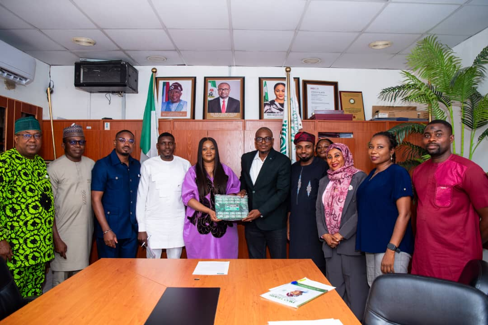
1978Founded as COANMeet the chairman
Chapter Chairman, NCS Abuja
Andrew Agbo Abu is a chartered technology professional, policy, innovation and ecosystem builder, and entrepreneur with a strong track record of building bridges between youth, startups, government and industry.
He is the founder of Young Innovators of Nigeria (YIN). He previously served as Director of Innovation & Strategy at NCS Abuja Chapter between 2023 and 2025, and is a Member of the Computer Professionals (Registration) Council of Nigeria (CPN).
Meet the chapter executivesAbout the chapter
The Nigeria Computer Society is the umbrella organization for information technology professionals, interest groups, and stakeholders in Nigeria. Established in 1978 as the Computer Association of Nigeria and transformed into NCS in 2002, the Society advances information technology science and practice across the country.
The Abuja Chapter connects that national mission with professionals, public institutions, businesses, academia, and innovators in the Federal Capital Territory.
Read the chapter’s official profileAdvance and promote computing and information technology education and practice for the benefit of all.
OUR VALUES IN PRACTICEA place to learn, contribute and find your people, whatever part of the technology ecosystem you call home.
Practical learning, expert masterclasses and pathways to grow your career.
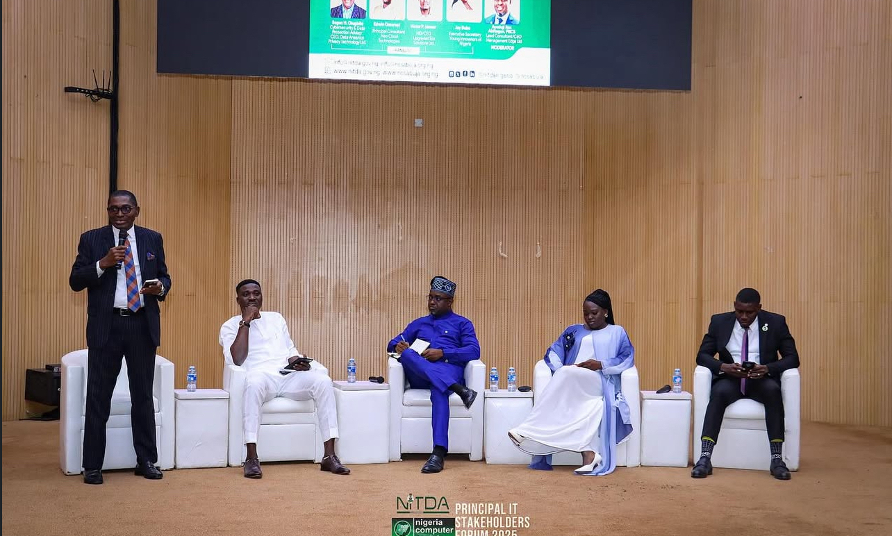
Build relationships, find collaborators and bring technology solutions to market.
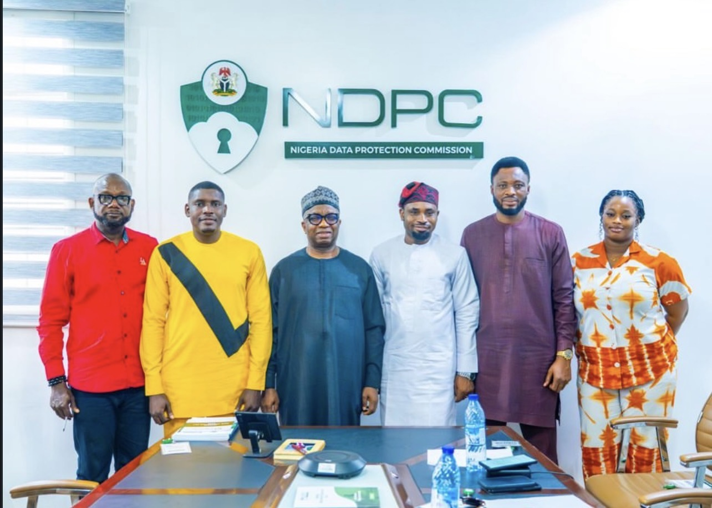
Connect professional insight with the decisions shaping Nigeria’s digital future.
Share ideas, access mentorship and connect with Abuja’s innovation community.
Build bridges between campuses, research, emerging talent and industry.
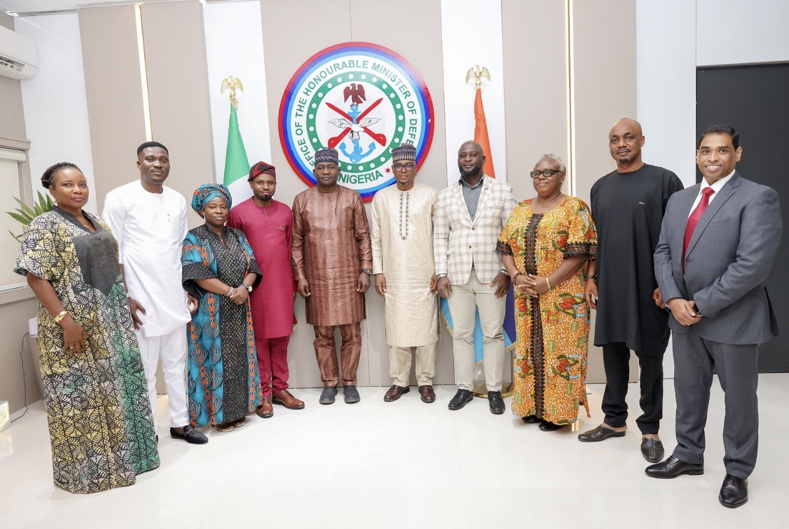
Meet peers, recognise expertise and make a lasting contribution together.
Heard about Techies’ Hangout?
Our quarterly chapter meeting brings together tech professionals, innovators and enthusiasts for an evening of meaningful connections, knowledge sharing and collaboration.
Whether you want to expand your network, gain industry insights, or simply unwind with like-minded professionals, Techies’ Hangout is the place to be.
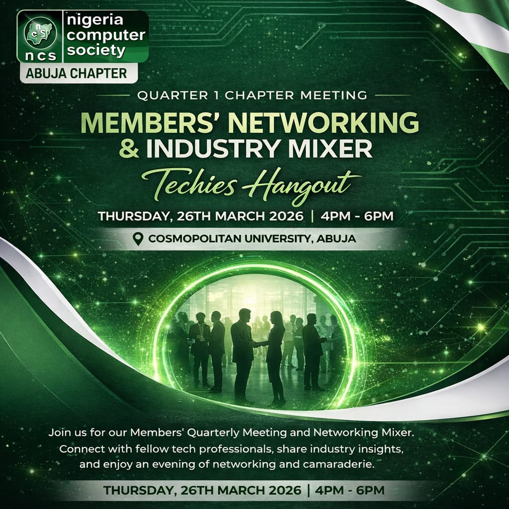
Membership
The vast NCS community gives you many opportunities to network with people from every field of computer science and technology. Would you like to join us?
What we work towards
These are some of our strategic aims and objectives.
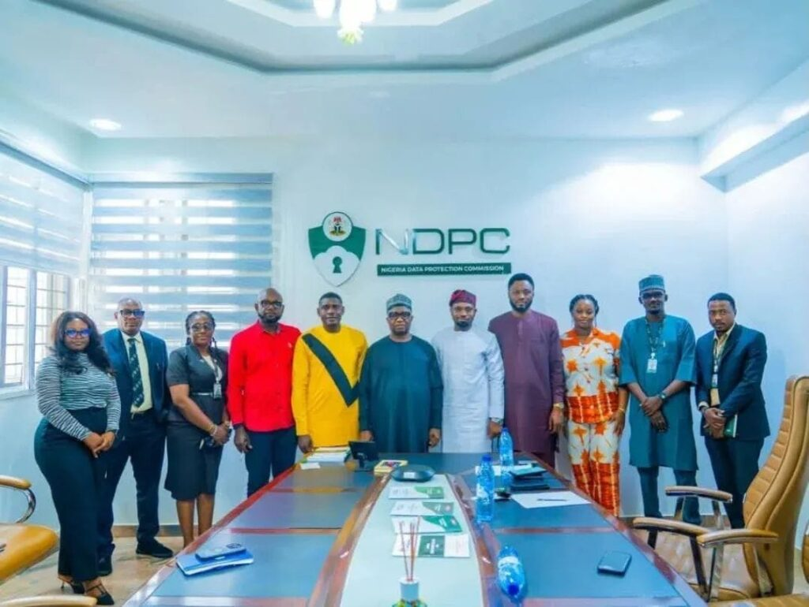
The people serving the chapter
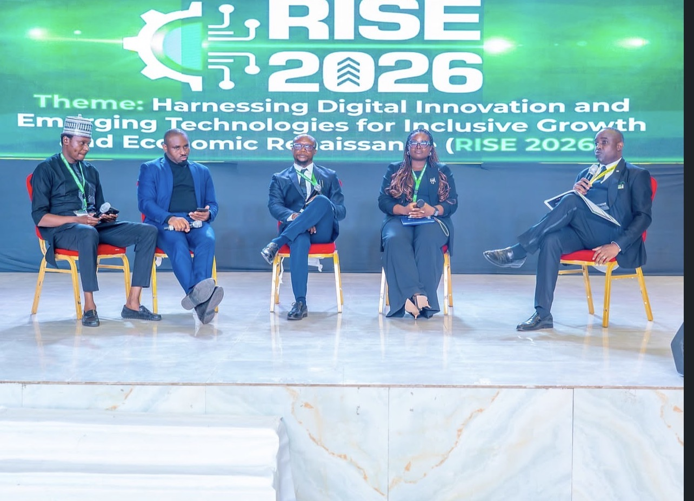
Chartered technology professional, policy and innovation advocate, and ecosystem builder connecting young people, startups, government, and industry.
Hauwa YahayaVice-Chairman
Mayowa AjiboyeGeneral Secretary
Victor P. IdonorAssistant General Secretary
Elizabeth IkyoTreasurer
Olusegun Ojo JayeobaPublicity Secretary
Sanusi Bayonle SaheedFinancial Secretary
Michael U. OkoroaforDirector, Strategy & Innovation
Maurice KelvinDirector, Training & Certifications
Vera Awoh AkujobiDirector, Events & Mobilization
Peter-Praise Effiom AkpanDirector, Membership Drive & Welfare
John O. OdumesiImmediate Past Chairman
Four recurring touchpoints turn one-off events into an active professional community, with a clear next step after every conversation.
Brief, focused conversations on the policies shaping our digital future.
Practical skills and fresh thinking, led by people who do the work.
Focused conversations that match real industry needs with local expertise.
Our flagship meetup for knowledge, connection, opportunities and action.
Programs, events & advocacy
Upcoming public listings are not currently posted on the legacy events pages. Explore the published programs and recent advocacy record below.

NCS Abuja has documented engagements with PTDF, NDPC, NIMC, and the Nigeria Police Force ICT Department.
Browse advocacy visitsMembership is open to IT professionals, practitioners, and people with a professional interest in computing. It is a path to new connections, meaningful contribution, recognition, and professional growth.
Explore NCS membershipStart with NCS membership.
Find a community, mentor or working group.
Share what you know. Help move work forward.
Grow your influence and lead with purpose.
Professional Fellow · Member · Associate · Graduate Member · Technologist · Student Member · Honorary Fellow · Affiliate Member · Corporate Member
Official NCS membership detailsMember portal: The current Abuja site does not publish a chapter-only sign-in portal. Membership registration and member services are handled through the official NCS platform.
Chapter initiatives
Long-running programs connect professional learning with schools, young people, industry, and the wider public.
Physical, online, TV, and radio conversations where IT professionals discuss technology, business, the national economy, and youth development, with startup mentoring and collaboration.
Virtual knowledge-sharing and training sessions launched to create value for NCS members and broaden access to professional learning.
A chapter initiative focused on improving access to computer systems and ICT exposure in government secondary schools.
A youth-focused technology initiative. Contact the chapter for current program availability and participation details.
A platform for technology and digital-economy engagement in the Federal Capital Territory.
Get involved
Registration forms on the legacy site are closed or unavailable at present. Contact the chapter to confirm current opportunities.
Propose a speaker or topic for a future webinar, masterclass, or chapter gathering.
Contact the chapterLegacy speaker form currently displays a loading state.Explore support for professional learning, policy engagement, and community programs.
Discuss a partnershipPartnerships are confirmed directly with the Secretariat.Help extend technology access and digital skills opportunities to schools and young people.
Discuss community supportContact the chapter for current participation details.Contribute to Techies’ Hangout, Computer-4-Schools, events, membership, or communications.
Ask about volunteeringLegacy team application forms are no longer accepting responses.Downloads & reference
Chapter plans are published as original NCS PDFs. Policy documents are hosted by their existing public providers.
Showing all library items
Organizer and venue pages are included for reference. The old site currently renders shortcode placeholders there; no working dashboard or chapter login was available to migrate.
The NCS Abuja Solutions Desk is designed to connect institutions and businesses with experienced technology professionals across the chapter.
Talk to the chapter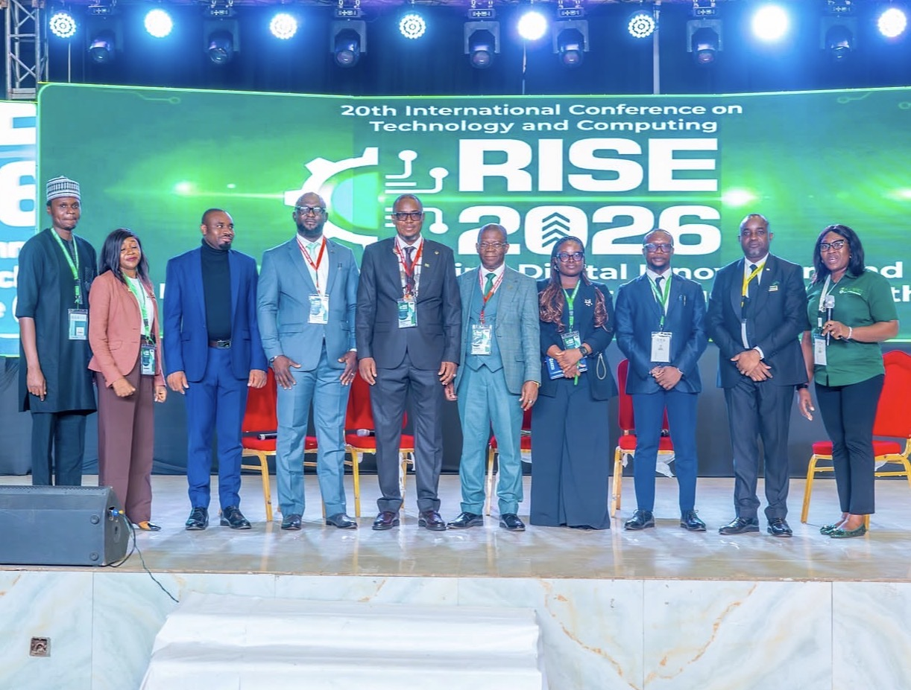
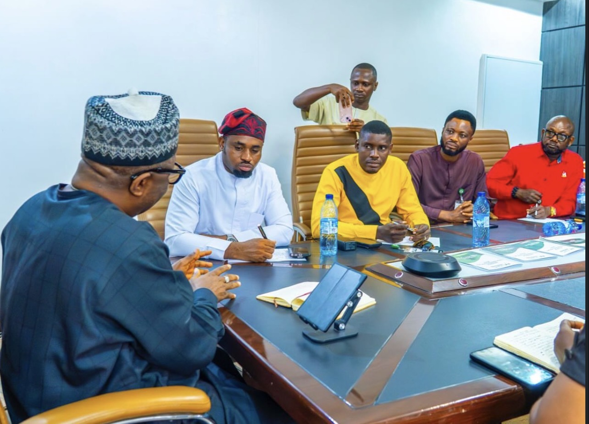
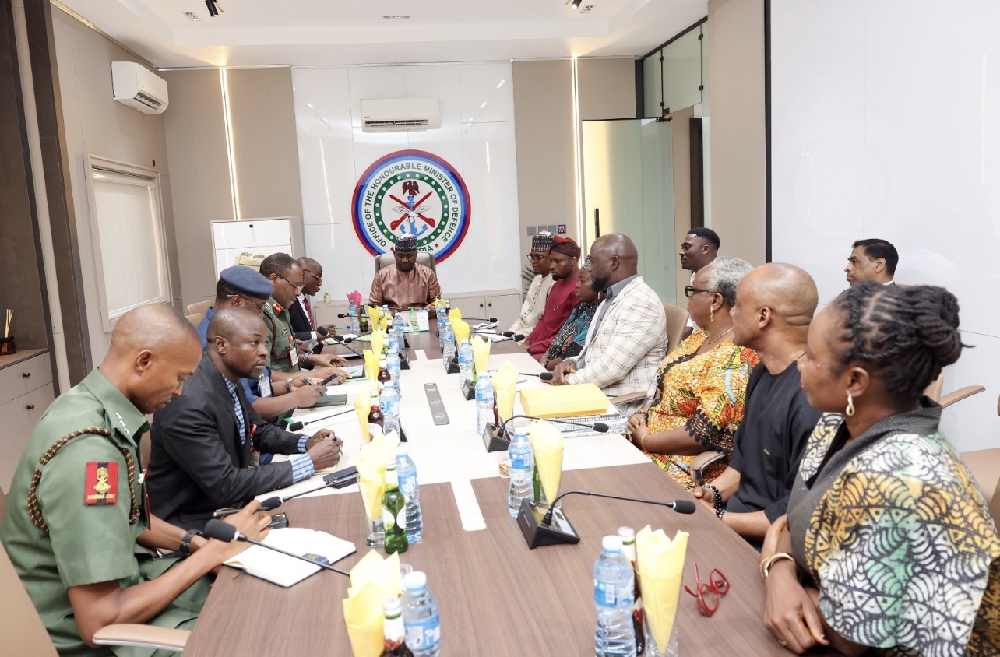
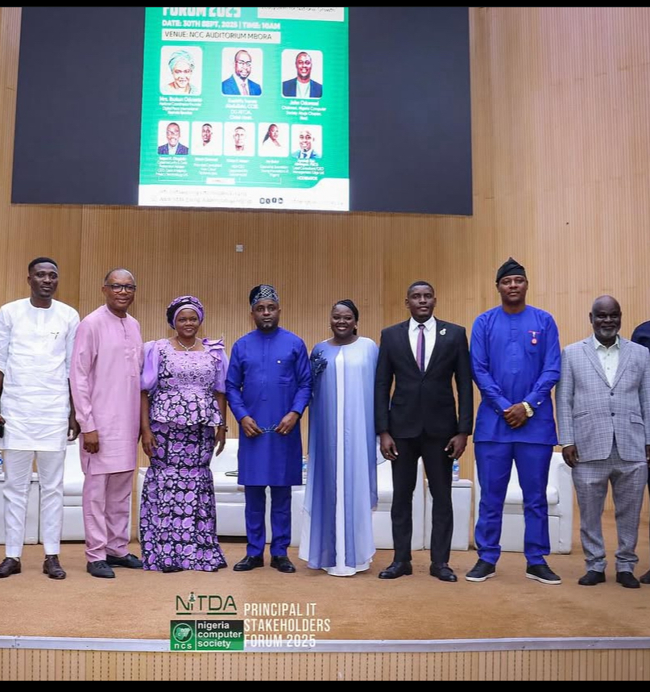
Watch & listen
Revisit the chapter’s Techies’ Hangout introduction and browse the public video archive.
Visit NCS Abuja on YouTubeContact & location
The old site publishes the Abuja office location, but no branch locator or chapter map directory.